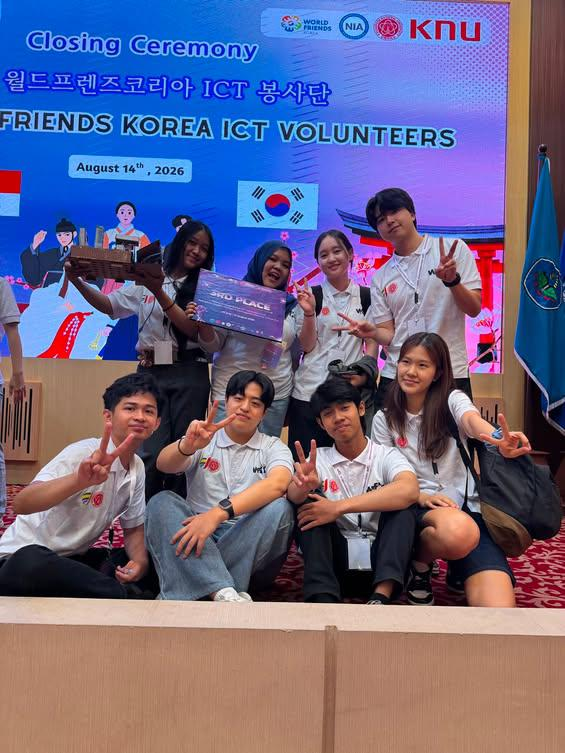
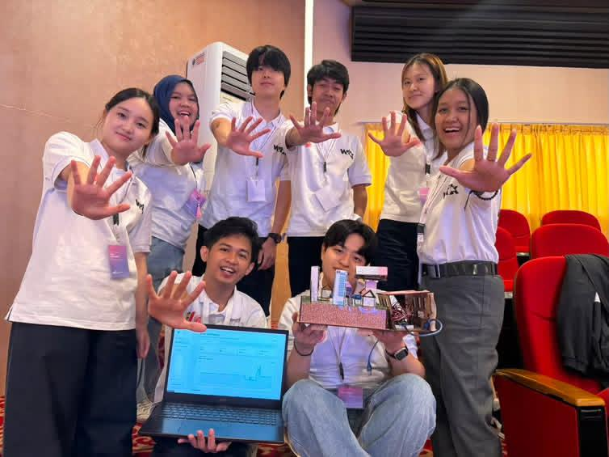
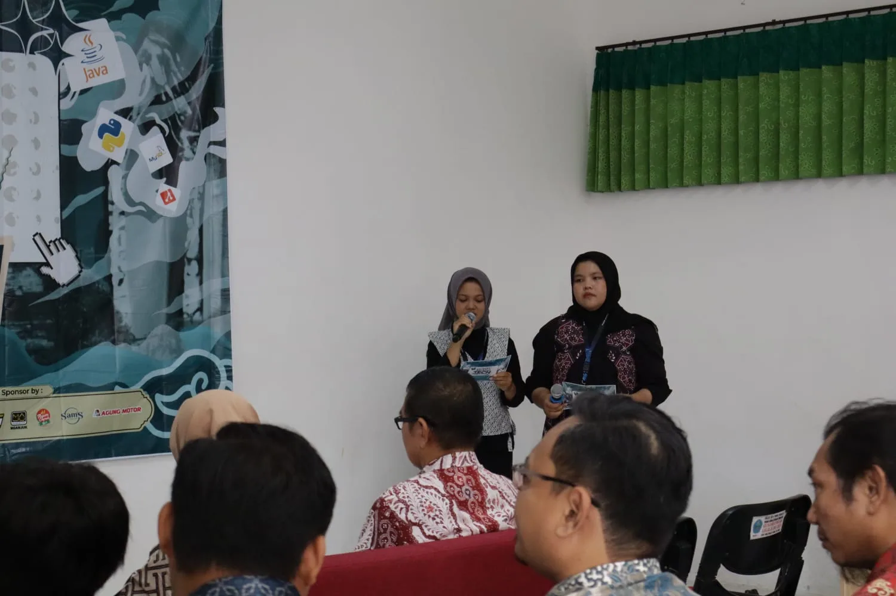

Galeri Kegiatan
Dokumentasi aktivitas internasional WFK ICT, liputan media televisi KBS, podcast, dan partisipasi public speaking.
Video & Liputan Media

Liputan KBS World - WFK ICT 2026
Liputan stasiun penyiaran Korea Selatan (KBS) meliput rangkaian kolaborasi World Friends Korea ICT bersama mahasiswa Polije.

Host Podcast Kampus
Diskusi dan pemanduan episode podcast seputar teknologi, inovasi, & kehidupan mahasiswa.

MC Study Club
Master of Ceremony kegiatan belajar bersama, transfer wawasan desain, dan workshop IT.
Dokumentasi Kegiatan (Klik Foto untuk Pop-up)

Kolaborasi WFK ICT 2026
Sesi workshop dan diskusi pengembangan proyek cerdas bersama delegasi Korea Selatan.

Team HIFIVE Awarding
Dokumentasi tim gabungan Indonesia-Korea saat penganugerahan Juara 3 WFK ICT 2026.

Penutupan & Pertukaran Budaya
Momen kebersamaan dan pertukaran budaya lintas negara dalam penutupan program.

MC TIF Exhibition 2025
Memandu jalannya acara pameran karya teknologi mahasiswa Politeknik Negeri Jember.